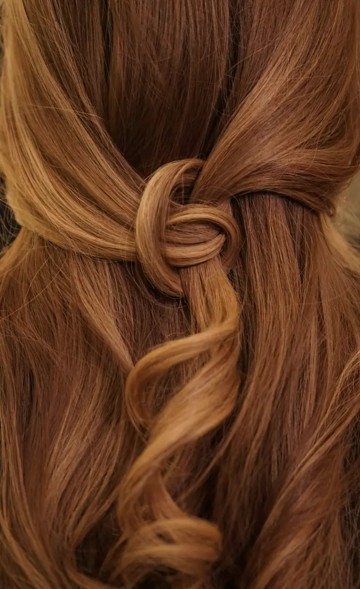
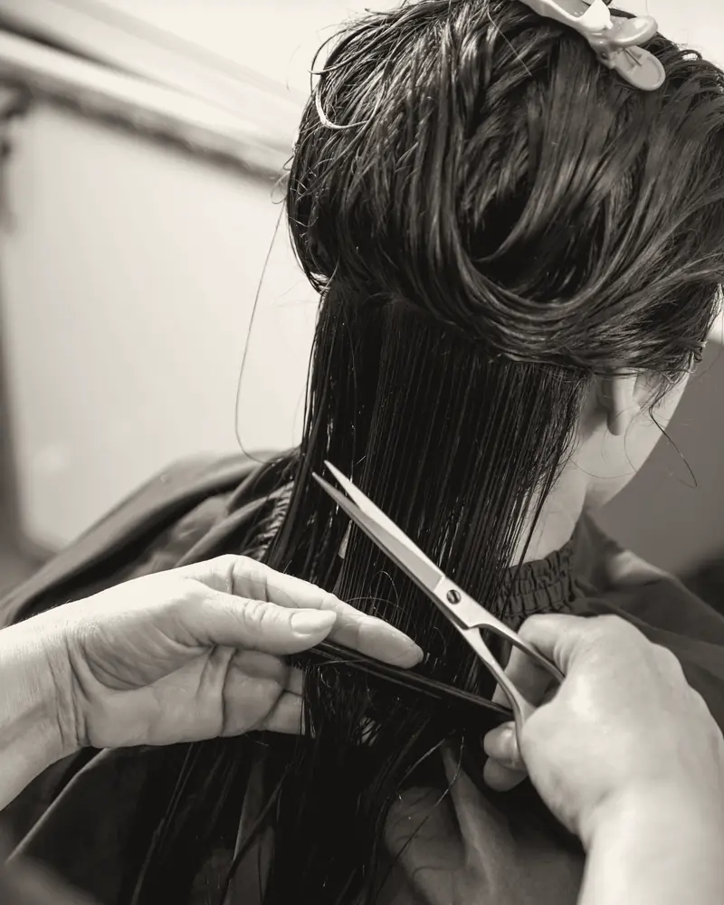
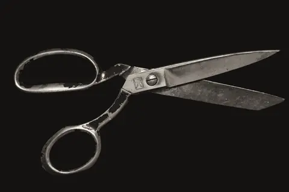
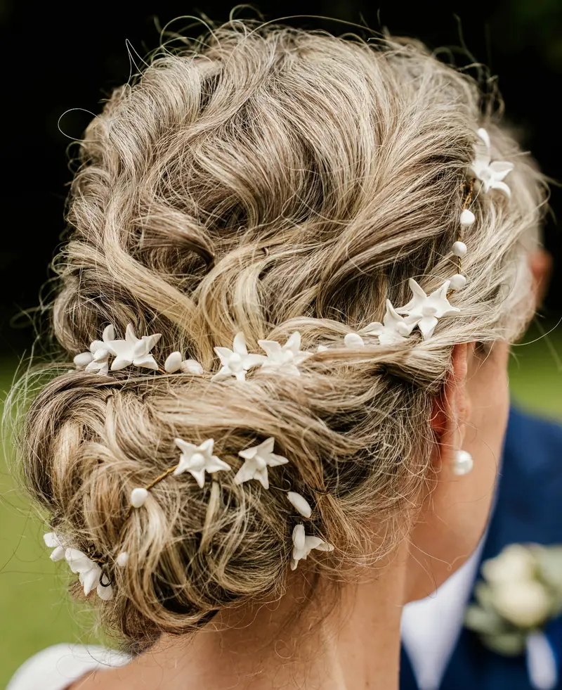
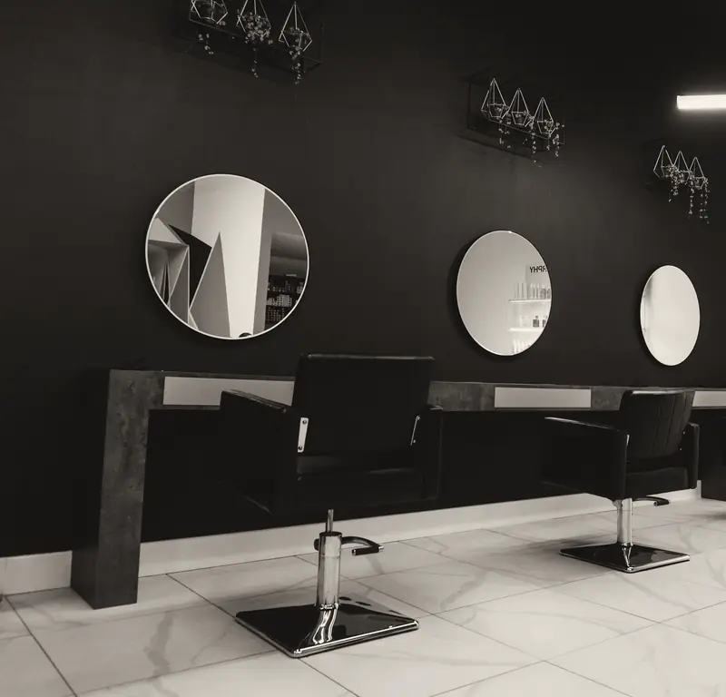
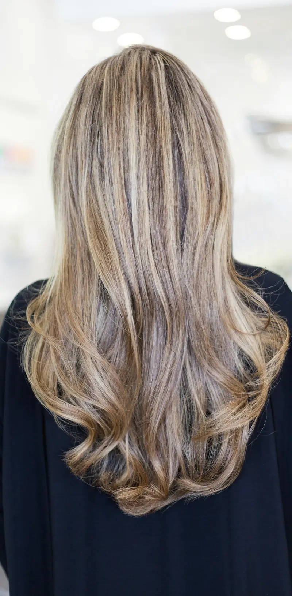

Parrucchiere · donna e uomo
Atelier Filo

Servizio speciale
Il colore
non è una tinta.
È una base, un riflesso e un tempo di posa. Prima di aprire un tubetto guardiamo il tuo capello alla luce della vetrina, non sotto il neon.
- 48 ore prima facciamo il test di sensibilità, se è il tuo primo colore da noi.
- Ogni 4–6 settimane il ritocco della ricrescita, sui 2–3 cm di radice.
- Fra un colore e l'altro il tonalizzante riporta il riflesso che il sole e i lavaggi hanno spento.
L'intervista
Cinque domande
prima delle forbici

Porto una foto?
Sì, anche due: una di quello che ti piace e una di quello che non vuoi più vedere. La seconda aiuta di più.
Bagnati o asciutti?
Il liscio si taglia bagnato. Il riccio si taglia asciutto, un riccio alla volta, perché bagnato si allunga e mente sulla lunghezza vera.
Voglio scalare, ma non perdere volume.
Allora si scala solo dove il capello cade piatto, di solito ai lati del viso. Dietro si lascia peso.
E la frangia?
La proviamo prima con il pettine, tenuta giù sulla fronte. Se fra un taglio e l'altro ti finisce negli occhi, passi e la sistemiamo in cinque minuti.
Ogni quanto devo tornare?
Un taglio corto regge 4–6 settimane, un caschetto 6–8, i capelli lunghi anche tre mesi se spunti le punte.
Prima
ascoltiamo.
Poi le forbici.


Il giorno
del sì
Sposa, testimone, mamma della sposa. Il raccolto si decide alla prova, non la mattina stessa.
- 3 settimane primaLa prova, con le forcine e gli accessori che porterai. Facciamo le foto da tre lati.
- Una settimana primaIl ritocco del colore, così il riflesso è acceso ma non appena fatto.
- Il giorno primaLavaggio e asciugatura: un capello pulito da poche ore tiene meglio le forcine.
- Il giorno del sìIl raccolto, con la lacca leggera in borsa per la sera.
Quanto
costa
Prezzi di esempio. Il listino completo divide donna, uomo e colore.
- Piega capelli lunghi26 €
- Taglio e piega45 €
- Taglio uomo20 €
- Ritocco ricrescita38 €
- Balayageda 110 €

Orari
e indirizzo
- Martedì – venerdì
- 9:00 – 19:00
- Sabato
- 8:30 – 18:00
- Domenica e lunedì
- Chiuso
Orari di esempio. Orario continuato: si può venire anche in pausa pranzo.
Via dell'Esempio 1 Indirizzo di esempio: l'attività è inventata.Il WhatsApp di questa demo arriva a Mockly, non a un salone.
La posta
delle clienti
Qui vanno le recensioni dei tuoi clienti.
In una demo non mettiamo recensioni inventate. Sul tuo sito, queste righe le scrivono le tue clienti.

Fine del numero
Ci vediamo
allo specchio.
Scegli il servizio, il giorno e l'ora. Al resto pensiamo noi, poltrona compresa.
Prenota il tuo posto